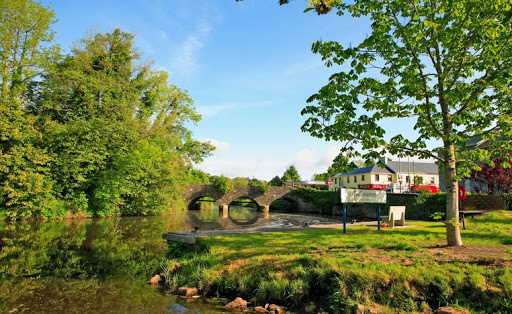

Béal An Átha Móir

Ballinamore also knowing as Béal an Átha Móir meaning "mouth of the big ford”, the town got this name because it was the main crossing point of the Yellow River, between St. John’s Lough and Garadice Lough, now knowing as the Ballinamore-Ballyconnell canal built to link the rivers Erne and Shannon in the 1840’s. The Ballinamore and Ballyconnell canal was opened in 1860 but it was not a success and fell into despair. Until in 1994 it was restored as the Shannon - Erne Waterways and today brings more tourists into the town of Ballinamore. The town situated in drumlin country at the foot of Sliabh an Iarainn dates from the 1621 plantation of Leitrim with English and Scottish settlers. In that year a grant of 600 acres of land was made to Sir Fenton Parsons who undertook to build the nucleus of a town. In the 19th century the town changed very little. It consisted of one short business street Main Street and three side streets Chapel Lane (St Brigid’s Street), Church Lane (Church Street) and Pound Lane (High Street was known as Cannaboe). In addition to a small business class it had a variety of trades - copper - butcher - printer - furniture manufacturer - baker - blacksmith and dressmaker. Between 1900 and 1930 the town took on a layout it has today. Thatched houses gradually disappeared and most of its better houses were built, Cannaboe extended to meet the railway station and became High Street.